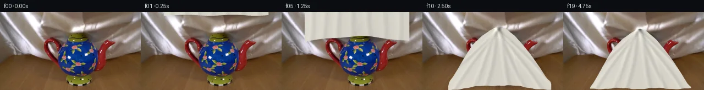

![首帧]()

Round 00
2026-11-05T08:26:31.623272+00:00像素候选变化代码 +225/−0inspection 更新
pixels 56250a9af4b3b5d1 · code 7a23d886fc410aa2
查看本轮 generate.py 真实 diff
--- previous/generate.py
+++ current/generate.py
@@ -0,0 +1,225 @@
+from pathlib import Path
+import hashlib
+import shutil
+
+import numpy as np
+from PIL import Image, ImageDraw, ImageFilter, ImageFont
+
+from artifact_io import save
+
+
+ROOT = Path(__file__).resolve().parent
+W, H = 256, 144
+Y, X = np.mgrid[0:H, 0:W]
+
+
+def smoothstep(v):
+ v = np.clip(v, 0.0, 1.0)
+ return v * v * (3.0 - 2.0 * v)
+
+
+def final_bounds(x, settle=0.0):
+ """Top silhouette and pooled hem of the drape, sampled for every x."""
+ # The asymmetric mound spans the hidden handle and spout as well as the body.
+ knots_x = np.array([47, 55, 66, 79, 91, 108, 124, 139, 151, 168,
+ 183, 199, 214, 226, 235], dtype=float)
+ knots_y = np.array([141, 130, 111, 88, 68, 49, 38, 31, 35, 49,
+ 68, 90, 112, 132, 141], dtype=float)
+ top = np.interp(x, knots_x, knots_y, left=160.0, right=160.0)
+ # Round the piecewise contour while retaining a small peak over the lid.
+ kernel = np.array([1, 2, 3, 4, 3, 2, 1], dtype=float)
+ kernel /= kernel.sum()
+ padded = np.pad(top, (3, 3), mode="edge")
+ top = np.convolve(padded, kernel, mode="valid")
+ top += 0.65 * np.sin((x - 43) * 0.115) + settle
+ bottom = 140.7 + 1.2 * np.sin((x - 50) * 0.092) + 0.35 * np.sin(x * 0.31)
+ return top, bottom
+
+
+def cloth_bounds(frame):
+ """Return x extent and upper/lower silhouette curves for one time step."""
+ xs = np.arange(W, dtype=float)
+ final_top, final_bottom = final_bounds(xs)
+
+ if frame <= 4:
+ # A finite sheet drops from above. At frame 4 its soft hem meets the lid.
+ bottom_center = -5.0 + 11.0 * frame
+ wav = 1.0 * np.sin((xs - 25) * 0.075 + frame * 0.34)
+ lower = bottom_center + wav
+ upper = lower - 88.0
+ left = 41.0 + 0.6 * np.sin(frame * 0.7)
+ right = 232.0 + 0.8 * np.cos(frame * 0.5)
+ return left, right, upper, lower, 0.0
+
+ if frame <= 11:
+ q = smoothstep((frame - 4) / 7.0)
+ linear_q = (frame - 4) / 7.0
+ start_lower = 39.0 + np.sin((xs - 25) * 0.075 + 1.36)
+ # The outer parts sag below the center immediately after contact.
+ side = np.clip(np.abs(xs - 139.0) / 93.0, 0, 1)
+ contact_sag = 22.0 * np.sin(np.pi * linear_q) * side ** 1.45
+ lower = (1 - q) * start_lower + q * final_bottom + contact_sag
+ start_upper = start_lower - 88.0
+ upper = (1 - q) * start_upper + q * final_top
+ left = (1 - q) * 41.0 + q * 47.0
+ right = (1 - q) * 232.0 + q * 235.0
+ return left, right, upper, lower, q
+
+ # Damped settling: tiny vertical relaxation plus a slowly widening pooled hem.
+ s = (frame - 11) / 8.0
+ settle = 1.8 * np.exp(-2.5 * s) * np.sin(2.6 * np.pi * s)
+ upper, lower = final_bounds(xs, settle=settle)
+ left = 47.0 - 3.0 * smoothstep(s)
+ right = 235.0 + 3.0 * smoothstep(s)
+ # The hem relaxes down by less than one pixel while sliding outward.
+ lower = lower + 0.5 * smoothstep(s)
+ return left, right, upper, lower, 1.0
+
+
+def antialiased_mask(left, right, upper, lower, scale=4):
+ """Rasterize a vertically sampled silhouette at high resolution."""
+ im = Image.new("L", (W * scale, H * scale), 0)
+ draw = ImageDraw.Draw(im)
+ xs = np.arange(W)
+ valid = (xs >= left) & (xs <= right) & (upper < H) & (lower > 0) & (upper < lower)
+ vx = xs[valid]
+ if len(vx):
+ top_points = [(int(x * scale), int(np.clip(upper[x], -10, H + 10) * scale)) for x in vx]
… diff truncated; 138 more lines …